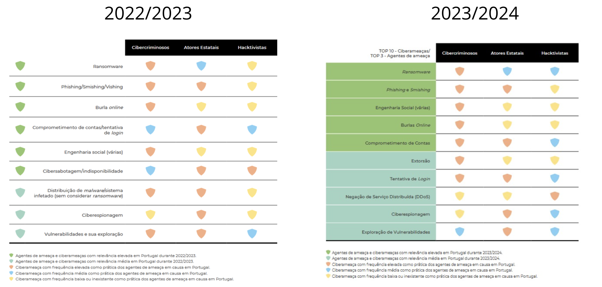

📖 Introdução ao Trabalho
Olá! Neste trabalho vou analisar os relatórios do Centro Nacional de Cibersegurança (CNCS) de Portugal. Confesso que no início achei um pouco complexo, mas depois de ler com calma e fazer anotações, consegui entender alguns dos pontos principais. Vou tentar explicar de forma simples o que aprendi!
📘 O Guia para Gestão dos Riscos (Dezembro 2022)
Para que serve?
O Guia orienta as entidades nacionais para fazerem a gestão dos riscos. Basicamente, ensina as organizações a identificarem os seus pontos fracos e a protegerem-se melhor.
Quem tem que usar?
- ✅ Administração Pública
- ✅ Operadores de Infraestruturas Críticas
- ✅ Operadores de Serviços Essenciais
- ✅ Prestadores de Serviços Digitais
Como funciona? (Processo Simplificado)
📕 Relatório Riscos & Conflitos 2024
Alguns numeros de 2023
Top 5 Ameaças em 2023
🔄 Comparação 2022/2023 vs 2023/2024

O que mudou entre os anos? (Minha interpretação)
📈 Principais diferenças que identifiquei:
- Ransomware: continua igual, mas os hacktivistas estão fazendo menos.
- Phishing/Smishing: mantém-se.
- Engenharia Social: mantém-se.
- Burlas online: mantém-se.
- Comprometimento de contas/Tentativa de login: no caso dos atores estatais e hacktivistas, mantém-se, mas os cibercriminosos estão utilizando mais esse tipo de ataque (cor vermelha). Acredito que seja porque é uma maneira deles conseguirem dinheiro, extorquindo as pessoas e fazendo com que paguem para ter suas contas de volta, ou por meio de ameaças, enfim.
- Extorsão: não estava no ano anterior e está mais praticada pelos cibercriminosos, mas também é praticada com alguma frequência pelos outros dois.
- Tentativa de login: é igual ao comprometimento de contas. Não sei por que separaram, devem ter algum motivo, mas as cores são iguais e está igual ao comprometimento de contas, ou seja, mais utilizada pelos cibercriminosos e igualmente utilizada pelos outros dois.
- Negação de serviço distribuída (DDoS): praticamente é uma distribuição de malware, mudaram o nome e, comparado ao ano anterior, está bem diferente — praticamente invertido. Está sendo menos praticada pelos cibercriminosos e pelos autores estatais, e mais praticada pelos hacktivistas.
- Ciberespionagem: mantém-se nos cibercriminosos e atores estatais, e os hacktivistas estão praticando menos.
- Exploração de vulnerabilidades: menos praticada pelos cibercriminosos e igual nos demais. Acredito que seja menos praticada pelos cibercriminosos porque as vulnerabilidades estão cada vez menores no nível técnico, e para os outros dois acaba sendo fácil explorar essas vulnerabilidades, porque na maioria das vezes são erros humanos. No caso dos hacktivistas, eles não são tão técnicos, então segue igual.
🤔 Minha conclusão pessoal:
Parece que as ameaças estão ficando mais distribuídas entre os diferentes tipos de atacantes. Antes cada grupo tinha suas técnicas preferidas, agora todos estão usando um pouco de tudo.
🔮 O Futuro (2024-2025)
Novas Ameaças que Vêm Aí
1. IA no Crime: Deepfakes, emails super realistas, desinformação...
2. Vulnerabilidades "Dia Zero": Falhas que nem os fabricantes conhecem
3. Criptomoedas: Pagamentos anónimos facilitam crimes
💡 Conclusões Finais
Depois de estudar estes relatórios, percebi que:
- ✓ Portugal tem regras claras mas nem todos as seguem
- ✓ O problema não é só tecnológico, é principalmente humano
- ✓ As autarquias precisam urgentemente de mais apoio e conscientização
- ✓ A IA vai complicar MUITO as coisas
- ✓ Todos precisamos de formação contínua em cibersegurança
📚 Fontes Consultadas
- Guia para Gestão dos Riscos v1.1 - CNCS, Dezembro 2022
- Relatório Riscos & Conflitos 2024 (5ª Edição) - CNCS, Julho 2024
- Decreto-Lei n.º 65/2021, de 30 de julho
- Lei n.º 46/2018, de 13 de agosto (RJSC)
- Quadros de Ameaças CNCS 2022/2023 e 2023/2024